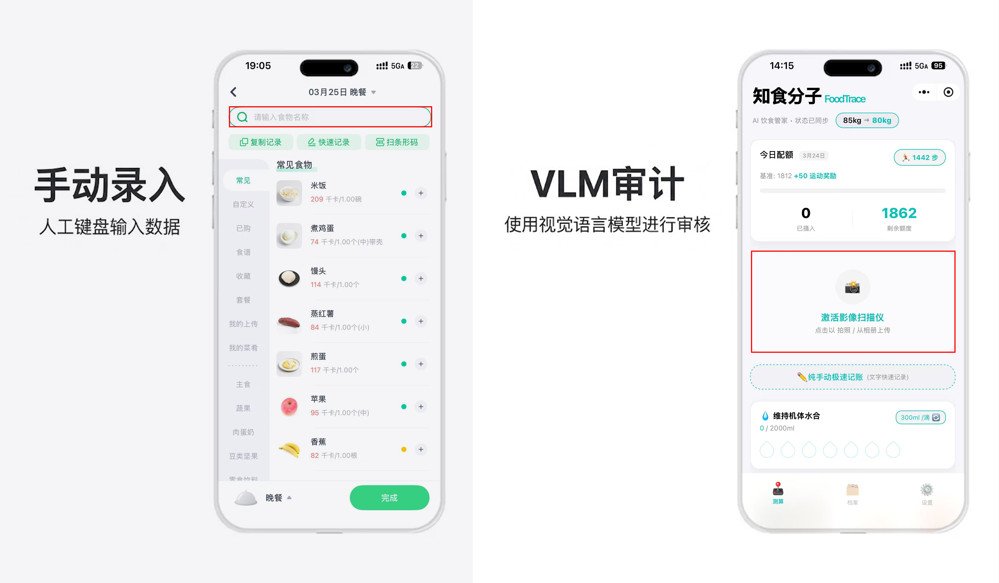
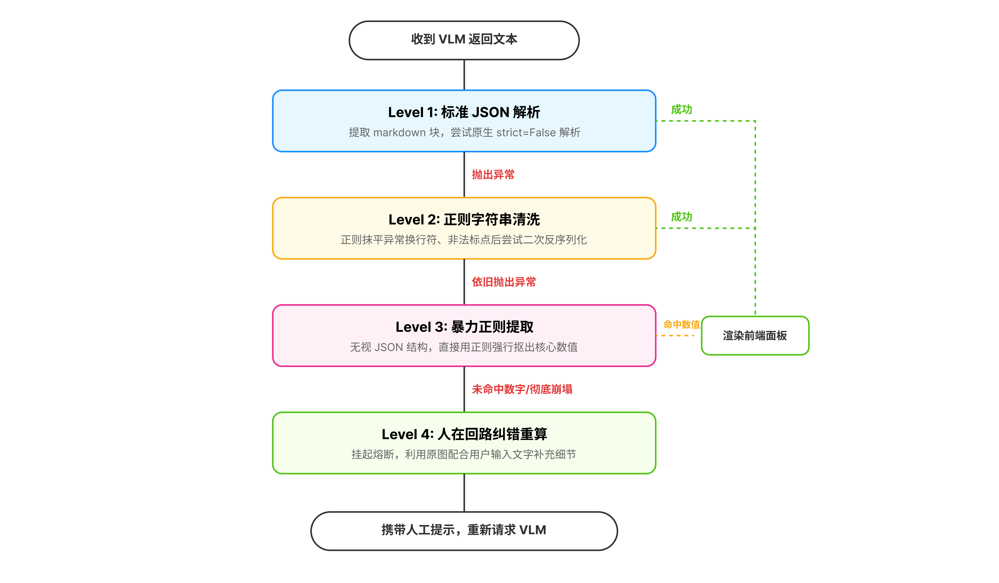
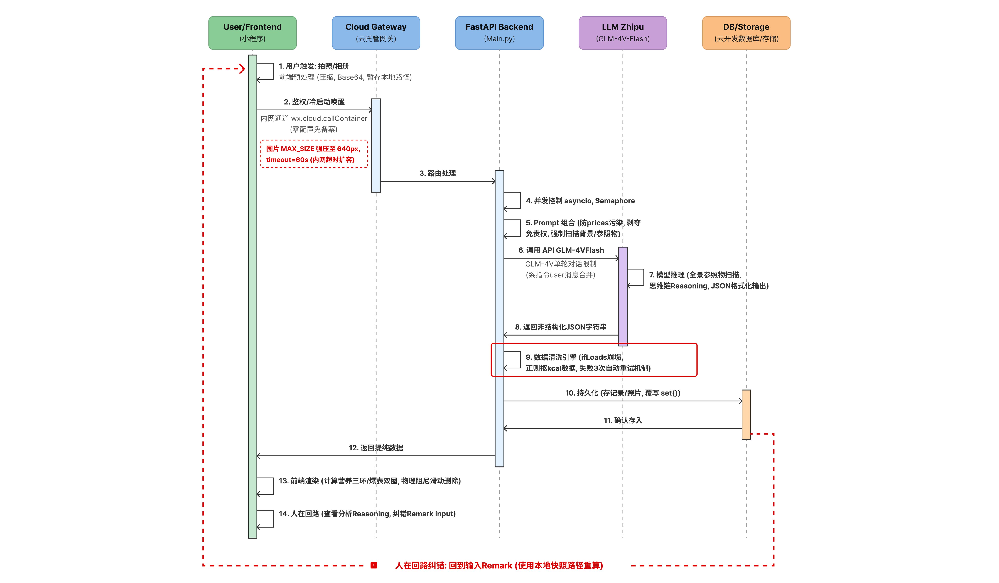
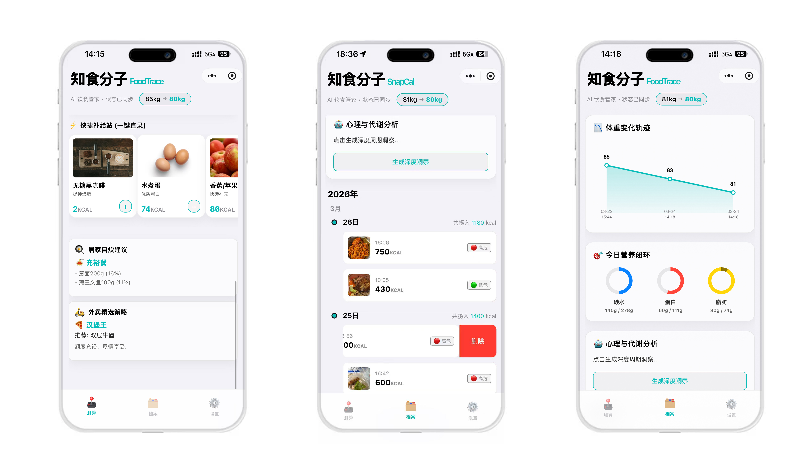

将建筑出身的“工程思维”与大模型技术相结合，我完成了这款产品的全生命周期落地，致力于消除健康管理的执行门槛。
在立项前，我深度调研了市面上的头部健康应用（如薄荷健康）。我发现，虽然健康管理是刚需，但记录饮食热量极度“反人类”：用户需要手动搜索食材、寻找重量、回忆配料。这种高认知负荷的交互导致了极高的流失率。
AI 赋能方案：我定义产品的切入点为使用 VLM（视觉大模型）实现“拍照即审计”，将“干瘪的数据录入”重塑为“智能对话估算”，极大降低记账摩擦力，提升坚持率。

在撰写 AI-PRD 时，重点不再是单纯写功能列表，而是“定义 AI 的边界”与“容错策略”。通过地毯式扫描用户的背景图片（包含背景残留物、零食、外卖截图），要求 AI 必须以“10年临床营养专家”人设输出标准的非结构化转结构化 JSON 数据。
面对 VLM 的输出不确定性，我设计了严格的 Fallback 路径：标准 JSON 解析 -> 正则字符串清洗 (抹平标点错误) -> 暴力正则提取 (抠出热量数字) -> 人在回路纠错重算。这保证了核心记账流在 API 崩溃时的 100% 畅通。

为了让产品真正落地，我独立完成了整套业务链路的搭建与后端开发（Python FastAPI）。这一部分工作完美展现了我的工程落地能力：如何将产品逻辑转化为代码逻辑，并考虑到隐私、超时等 PM 核心细节。

在体验设计阶段，我的目标是让用户的输入口做得尽可能轻量、无感。所有的复杂推理都在云端静默完成，前端只提供最直接的情绪价值。
